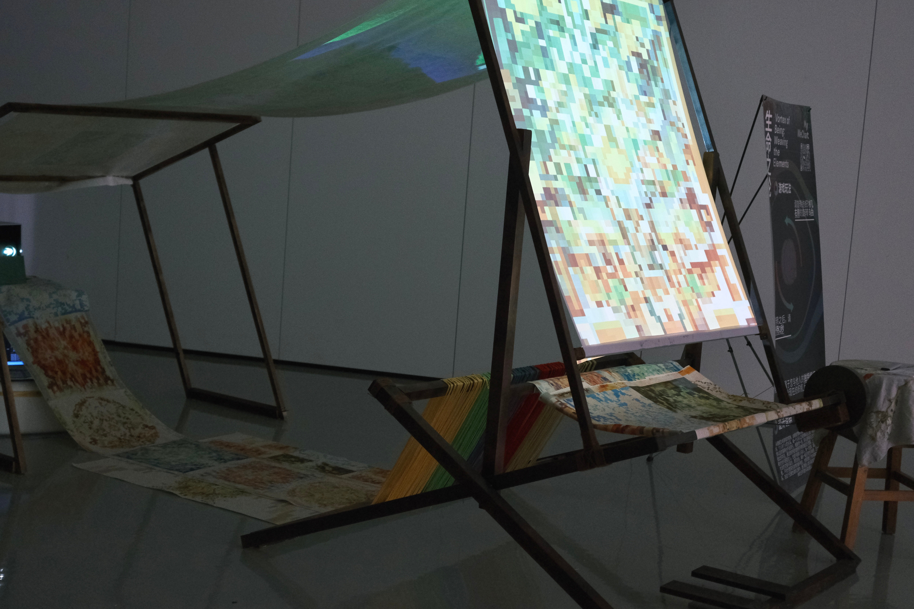

生命之轮 · 五元编织
01 / INTERACTIVE ART
−
✳
THE WHEEL OF LIFE
转动，
织入生命。
五行色彩与生命游戏，在你的转动中交织、生长。
进入编织
↗

01 — INTERACTIVE INSTALLATION
↗
SentAIment
02 / AI & EMOTIONS
+
⌘
HUMAN × MACHINE
Technology.
With feeling.
探索人工智能与人类情感之间的连接。
查看项目
↗
02 — AI × HUMAN EMOTIONS
↗